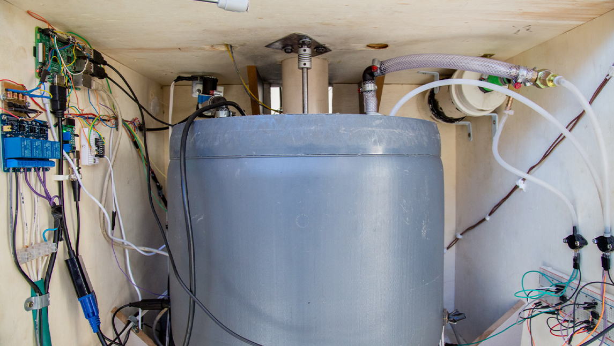

¿Sabías que se puede generar gas gratuito y ecológico en tu casa? Hablamos de un biodigestor: un tanque con un sistema cerrado hermético, que convierte los residuos orgánicos en biogás apto para cocinar, producir energía eléctrica, calentar agua, y mucho más. La mejor parte es que podés hacer tu propio biodigestor casero, una manera económica y sencilla de reciclar, reducir y reutilizar con grandes beneficios.
Los recursos orgánicos que podés utilizar son estiércol de animal, residuos de alimentos (no cítricos), aceite de cocina usado y pasto recién cortado o aserrín, que se mezclan con otros materiales. Lo ideal es triturar lo más posible los materiales con el fin de simplificar el trabajo del biodigestor. Gracias a este invento, tu casa puede abastecerse de gas ecológico, reduciendo los gatos de tu bolsillo y la contaminación del planeta. Si nuestros hábitos cotidianos se vuelven más sustentables, poco a poco, el mundo también lo será.
En el video se explican las instrucciones, paso a paso, para que vos mismo puedas hacerlo y enseñarle a otros para contribuir con más hogares amigables con el medio ambiente.
No olvides que podés utilizar tus propios recursos si cumplen con la misma función que los que se proponen en el tutorial. ¡Suerte!